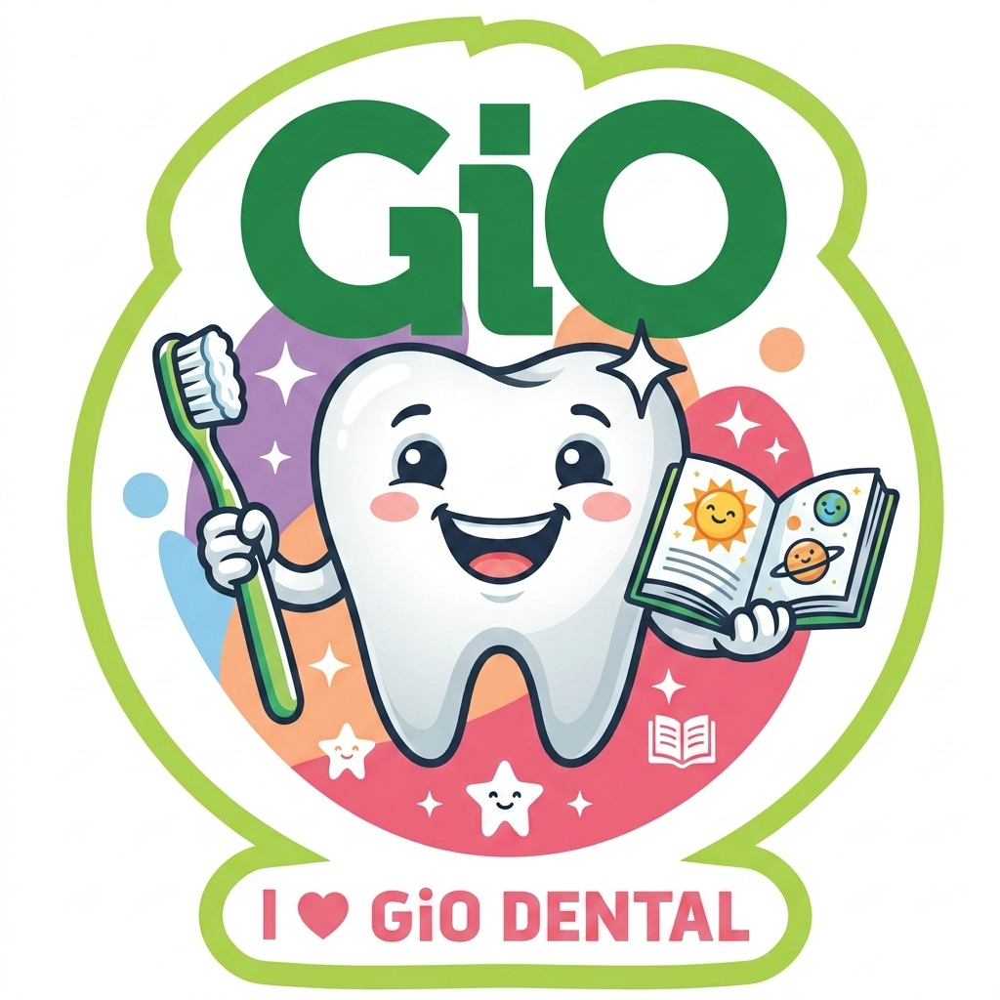

GiO adalah maskot resmi GiO Dental yang super keren dan penuh semangat! Dengan senyum bersih berkilau, GiO siap jadi temanmu dalam menjaga kesehatan gigi setiap hari. GiO percaya bahwa gigi sehat = senyum keren = kepercayaan diri yang tinggi! 💪
Ada ribuan kuman jahat bersembunyi di mulutmu. Kenali mereka agar GiO bisa melawan! 🔍
Kuman paling berbahaya! Suka makan gula di gigimu lalu menghasilkan ASAM yang merusak enamel secara perlahan. 😈
Bukan kuman asli, tapi amunisi kuman! Makin banyak gula yang kamu makan, kuman makin kuat dan ganas. 💣
Lapisan lengket kuning-coklat yang menempel diam-diam di gigi. Tempat persembunyian favorit kuman. Harus dibasmi tiap hari! 🧹
Plak yang dibiarkan hingga mengeras jadi batu! Tidak bisa dibersihkan sendiri — butuh dokter gigi! 🏥